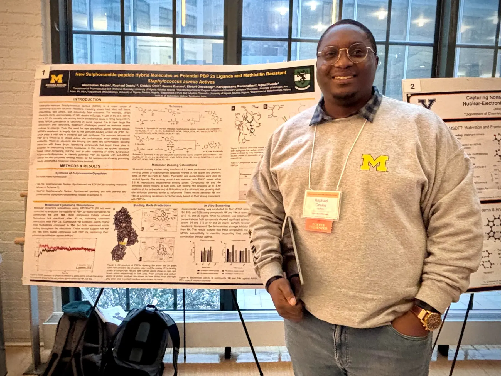
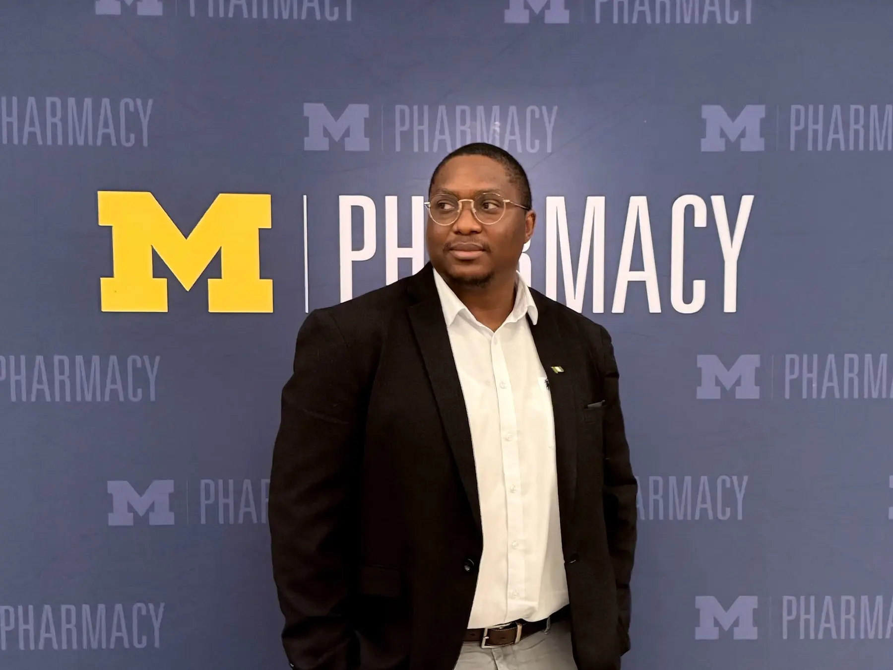
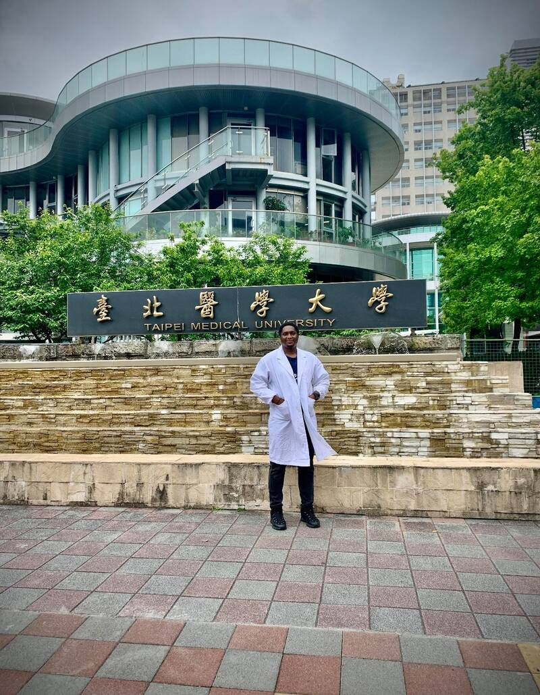

About
A scientist shaped by three continents.
Raphael S. Onuku is a Nigerian medicinal chemist and PhD candidate at the University of Michigan.



Scientific path
My scientific path began in pharmacy at the University of Nigeria, where an undergraduate project on HIV-1 protease introduced me to structure-based computational drug discovery. That experience established a question that still guides my work, how can molecular models become better experimental decisions?
At Taipei Medical University, I trained in medicinal chemistry, organic synthesis, and molecular simulation while developing celecoxib-based histone deacetylase inhibitors for glioblastoma. I completed the degree as a Taiwan Government Scholar and received the 2023 Outstanding Graduate Student Award.
A predoctoral internship at Academia Sinica expanded my computational work into peptide self-assembly. I am now completing doctoral training in Medicinal Chemistry at the University of Michigan, where I integrate peptide chemistry with computational design to develop anti-infective therapeutic candidates.
What drives the work
I am interested in scientific problems that require movement between disciplines. My work may begin with a molecular structure, continue through a simulation, become a synthesized peptide, and return as biological data that changes the original hypothesis.
My long-term goal is to lead translational anti-infective drug-discovery programs that connect medicinal chemistry, peptide science, computational design, and experimental pharmacology.
Recognition
Selected awards
Potential Made Possible ScholarshipCEW+ Scholarship Program
Eugene and Shirley Cordes ScholarshipDepartment of Medicinal Chemistry, University of Michigan
Outstanding Graduate Student AwardMinistry of Education and Ministry of Foreign Affairs, Republic of China (Taiwan)
Falling Walls Lab Taipei Award Winner“Breaking the Wall of Multi-Drug-Resistant Malaria”
Taiwan Government ScholarshipMinistry of Education, Republic of China (Taiwan)
Professional societies
Sigma Xi, The Scientific Research Honor Society
Rho Chi Society, Alpha Chapter